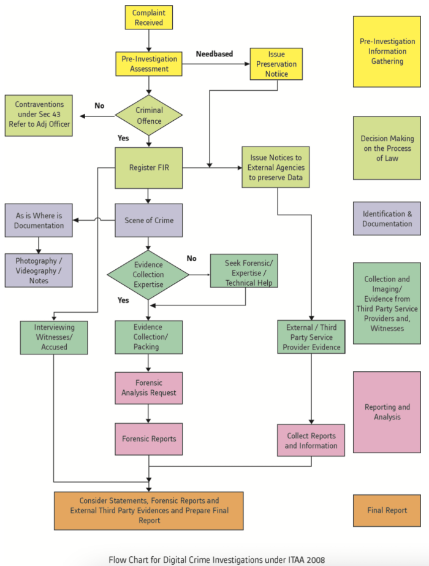

What is Standard Operating Procedure of Investigation
• Evidence has to be gathered in way that it will be accepted by court of law
• Easier if standard procedures are formulated and followed
• This facilitate the exchange of evidence in cases having interdepartmental and international ramification
• Every care must be taken to avoid anything which might corrupt the data or cause any other form of damage
• The use of standard methods and procedures minimise the risk of damage
• Most important reasons for improper evidence collection are poorly written policies
